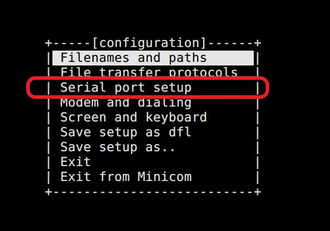
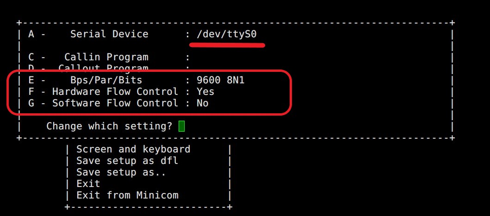
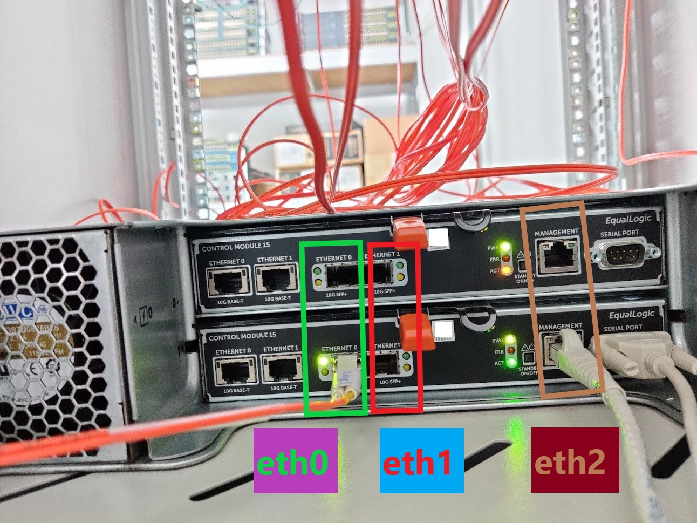
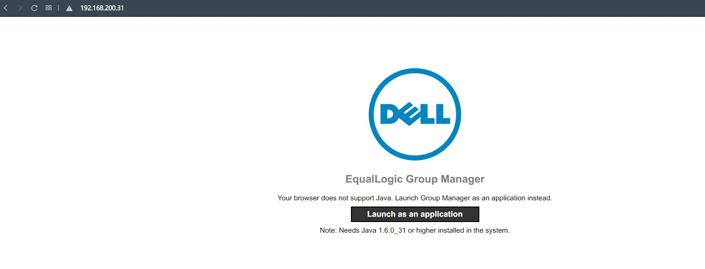
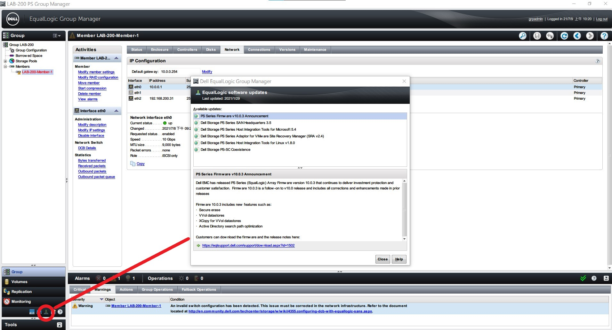
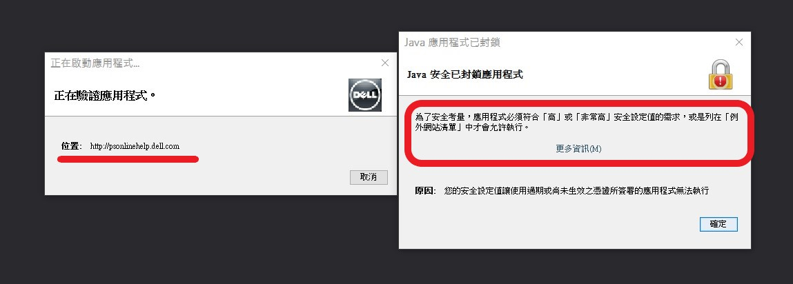

使用 minicom 設定 Dell PS6210 Storage (iSCSI)
Contents
本次 192.168.200.x/24 LAB 使用到的 Dell PS6210 本人。
參考資料: EqualLogic PS6210XS 及 CentOS 6.5 MPIO 實作
使用 minicom 連接 serial port
如果作業系統是 Windows 的話可以使用 PuTTY 連接。設定的參數都通用 (baud rate/Data bits/Stop bits/Parity)
使用到的線材: RS 232
圖片取自 綠聯
設定 vSphere passthrough
(這段廢話可以跳過) 嗯… 這次又很幸運地踩到剛出爐的地雷了。 VCSA (vCenter) 沒辦法設定 serial passthrough!!
解法在這邊 Cannot add or edit pipe, network or physical serial port on virtual machine (83898)
不過後來嫌太麻煩， 直接進 ESXi (Web 控制台) 設定比較快。

我們的 RS 232 線是插在 Dell R620 背板 (Back-Panel) 因此是 uart1
▲ 4 號位即是 serial port。
圖片取自 Dell PowerEdge R620 Owner’s Manual
安裝 minicom
|
|
設定 minicom
How To Check and Use Serial Ports Under Linux
八克里-Linux 下使用終端機連接 switch (minicom)
查找 serial port (COM port) 在哪個裝置上面。
|
|
得知 serial port 在 /dev/ttyS0 之後就可以設定 minicom 了。
|
|

▲ 選擇 “Serial port setup”

▲ Device、Speed、Hardware …、Software … 都要設定
▲ 關於 speed 的細項。 8N1 代表 8 data bits + None Parity + 1 stop bit
▲ 存成預設設定檔，按下 Exit 即可使用。

▲ 按下 Enter 開始操作。
▲ 預設登入帳號密碼 grpadmin/grpadmin
回復原廠設定 reset to factory
|
|
▲ 輸入 (確認用) “DeleteAllMyDataNow” 後開始回歸原廠設定
▲ resetting
設定 Dell Equallogic PS6210
EqualLogic PS6210 back-panel

參數說明
相同網段以相同顏色標記。藍色: 管理段 (非大流量) 紅色: 資料段
Management 管理 (eth2) 必須與 資料段 (eth0 eth1) 不同網段!
否則設定上會出現錯誤: % Error - Management interface must not be on SAN subnet.
- RAID Type: RAID-6 Accelerate，因為 Dell EqualLogic PS6210 有提供 7 bay 的 SSD + 14 bay 的 HDD。 SSD 的部分被拿來當 cache 加速。
- Group Name: 多台 EqualLogic 設備能夠加入同一個 group，邏輯上形同一個大的儲存池 (storage pool)。
- Group Management IP: group 內有多台設備時可以統一用這個 IP 來管理所有 member。
- Group IP: iSCSI Target 的 IP 位置。未來 ESXi host 就是使用這個 IP 掛載空間。
- Group Join Password: 新的 EqualLogic 加入 group 所需要的密碼。
- Member Name: 辨識每一台 memeber 用的。
- Member Management IP: 各台 member 設定在 Management (eth2) 管理用途。
- DCB VLAN Identifier: Data Center Bridging，簡單來說就是將 DC 內的 Ethernet 封包做區分，進而產生優先順序。這個 VLAN tag 應該會用在 group member 互相傳輸資料的封包上。 ESXi host 連線到 EQL 的 iSCSI 封包並不會帶此 VLAN!! (已與 CVT-EQL 對照過)
設定值
- RAID Type: RAID-6 Accelerate
- Group Name: LAB-200
- Group Management IP: 192.168.200.30/24
- Group IP: 10.0.0.200/24
- Group Join Password: lab200 (小寫 LAB)
- Member Name: LAB-200-Member-1
- Member Management IP: 192.168.200.30
- DCB VLAN Identifier: 0 (官方不建議使用
0或者1，不過我們在測試環境.. 就Switch default0吧 XD )1 - Controller Ethernet0 (eth0): 10.0.0.100
- Controller Ethernet1 (eth1): 10.0.0.101
- Default gateway: 10.0.0.254
- Password for the default group administration(grpadmin):
查看 Member NIC 狀態
|
|
設定 eth2 (Management port) IP address
|
|
接著就可以在網頁上輸入 eth2 (Management) 的 IP，下載 Java 寫的管理程式，如果瀏覽器支援 Java 的話可以直接在網頁上執行，這次有嘗試使用舊版 Firefox 試圖不使用管理程式，可惜沒有成功~
How To Enable Java in Firefox: 3 Methods
不過到是找到 Firefox 免安裝版本 (舊版)

Dell EqualLogic Manager
前置作業請參考: Dell EqualLogic 登入方式
之前打的這篇有無法使用 “加密通訊” 的問題 這次有找到解法，實測之後可以使用。
PS6000 Encrypted Connection Could Not Be Established
Java 使用 Encrypted Connection 方式
簡單來說就是 Java 8 build 201 的更動把 anon (anonymous) 和 NULL 的加密方式 (cipher suites) 拿掉了。我們必須重新將 anonymous 這個加密方式拿回來~
- 編輯
C:\Program Files (x86)\Java\你的版本\lib\security\Java.Security - 用搜尋定位
jdk.tls.disabledAlgorithms - 將
anon移除 - save and exit
▲ 同意喇哪次不同意的 EULA
▲ 設定 Timezone 與 NTP server

▲ 尚未建立 RAID，被詢問是否要馬上建立。是!
▲ Description 選填，Storage Pool 選擇 “default”
▲ RAID Policy 選擇 “RAID 6 Accelerated” + 馬上建立 RAID
▲ Member/RAID 初始化
▲ console 這邊可以看到 login 與 RAID 初始化 相關 log
▲ status 可以看到 RAID 正在建立的進度。
(本次已是最新) 更新 Dell EqualLogic 韌體相關

▲ 剛登入進來，左下角的更新提醒燈會一直閃爍。雖然上面顯示 “Available updates”，不過事後驗證應該只是公告…不是真的有可用更新

▲ 點選 Member -> Maintenance -> Update firmware。
Dell Storage Update Manager 會在 local 另外開一個 Java 視窗，可以自動從網路上下載更新
Update using Group Manager 能夠直接選擇 local 的更新檔，不會另外開啟 Java 視窗
就試試自動更新吧~
按下 OK 後即會透過預設瀏覽器下載 Java 程式。注意!! 這是從 Dell 網站抓下來的 Java，並不是像 EqualLogic 自帶的。IP 與 user 請自行修改
手動下載的原因: 我的預設瀏覽器語系是 zh-tw，直接抓下來高機率是簡體中文。不如手動從語系是 us-en 的瀏覽器抓，看英文。
|
|

▲ 一樣要先前置作業，將 psonlinehelp.dell.com 加到 Java 的安全清單內。
▲ 哪次不接受的我接受
▲ 登入 EqualLogic Member
▲ 最新沒東西
Author 老柯
LastMod 2021-07-23